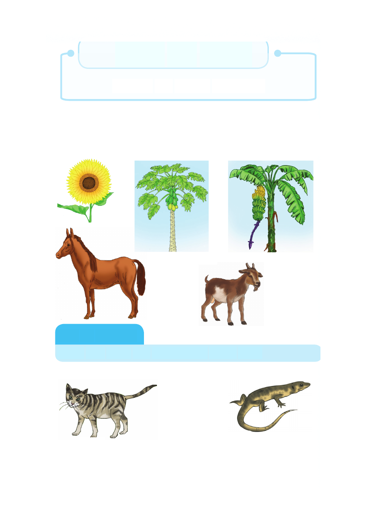

Sura ya Tano
Viumbe hai katika mazingira
Utangulizi
Katika sura hii utajifunza kuhusu viumbe hai. Utaweza kubaini
aina mbalimbali ya wanyama na mimea, Vilevile utaelezea
faida za wanyama na mimea katika maisha yako ya kila siku.
Kazi ya kufanya
Elezea kwa kifupi vitu unavyoviona katika picha
Kutambua wanyama mbalimbali
Paka Mjusi
Sura ya Tano Viumbe hai katika mazingira Utangulizi Katika sura hii utajifunza kuhusu viumbe hai. Utaweza kubaini aina mbalimbali ya wanyama na mimea, Vilevile utaelezea faida za wanyama na mimea katika maisha yako ya kila siku. Kazi ya kufanya Elezea kwa kifupi vitu unavyoviona katika picha Kutambua wanyama mbalimbali Paka Mjusi